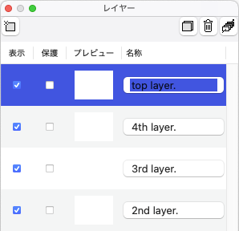

The Layer Window
This window work that manage the layer structure of current document.

Layer Structure, Layer List
The layer structure is represented by list. An entry at most below(bottom) within list is most below(bottom) layer.
Following functions are able to do on this list:(For a detail of each function, see to their description(access to description via link).)
| Reordering | A entry of list allow to drag in order to reordering. | desc. |
|---|---|---|
| Duplicate | This operation is similar below describe 'Reordering'. If sub bottom(right bottom) on mouse is pressed when a entry of list drop to target layer, dragging layer is duplicated. | desc. |
| Visible | Switch either visible or invisible. | desc. |
| Protection | Switch either allow or disallow to drawing. | desc. |
| Name | Edit layer name. | desc. |
Create, Delete and Unify
Some buttoms are placed for below functions(For a detail of each function, see to their description(access to description via link).)
| Create |  |
Create layer with current color at most above(top) of list. | desc. |
|---|---|---|---|
| Delete |  |
Delete setected layer. | desc. |
| Unify |  |
Unify with all visible layers into a layer. | desc. |